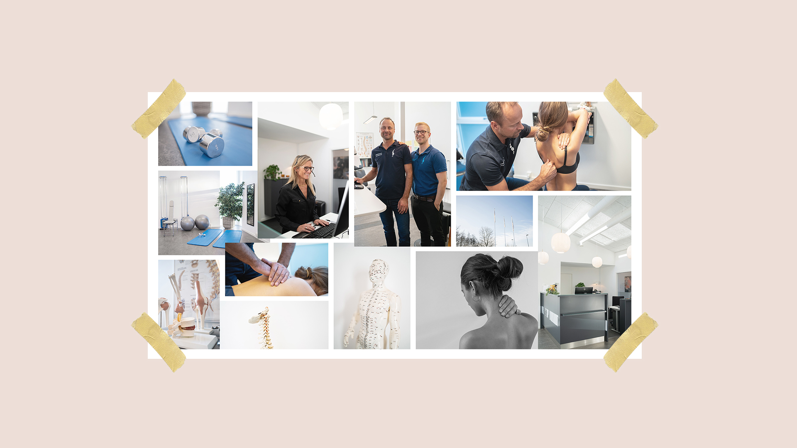
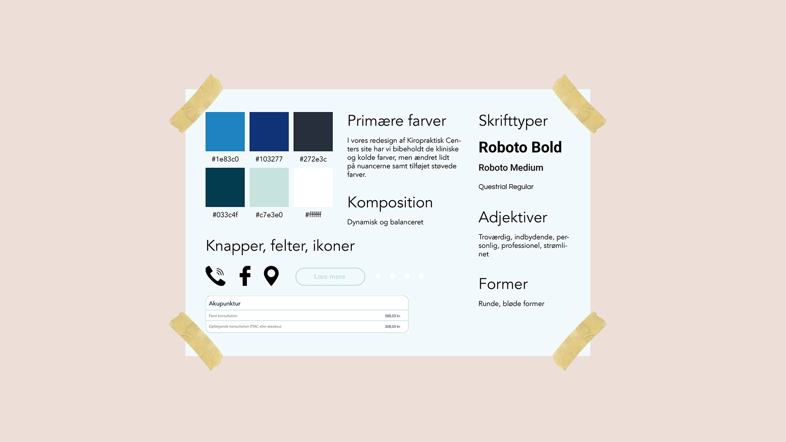
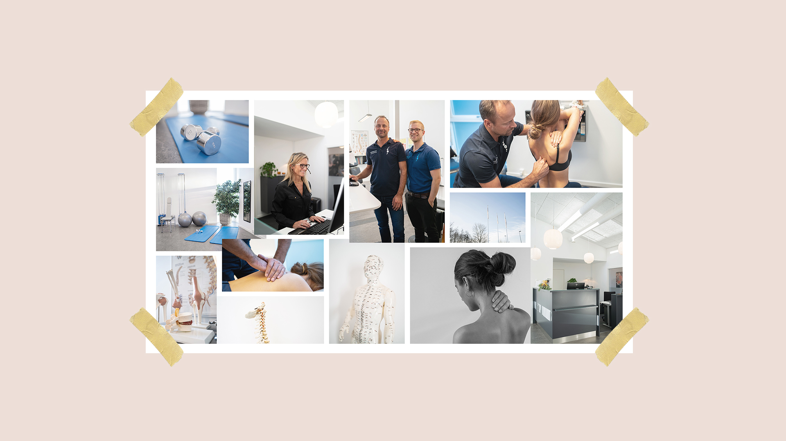
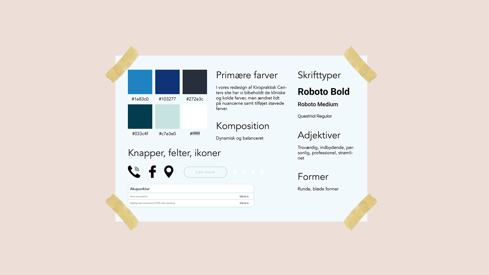

Case: Lav et redesign af en selvvalgt virksomheds hjemmeside, som munder ud i et kodet website.
Proces: I dette gruppeprojekt tilrettelagde og arbejdede vi efter scrum samt Double Diamond-metoden. I discover-fasen undersøgte og udforskede vi med henblik på at identificere og kortlægge et problem og et brugerbehov.
I define-fasen udtog vi de vigtigste indsigter fra discover fasen og fandt ud af og afgrænsede præcist det problem, vi gerne ville løse - vi fandt deres hjemmeside uoverskuelig og tung at navigere rundt i, hvorfor vi ønskede at gøre den mere indebydende og enkel for brugeren.
I develop-fasen udviklede vi ideer og producerede indhold baseret på den indsamlede viden fra fase 1 og det specifikke fokusområde fra fase 2. I deliver-fasen evaluerede og testede vi samt fik feedback med henblik på at færdiggøre produktet.
Løsning: I vores løsning fokuserede vi på, at det skulle være overskueligt for brugeren at finde information omkring fagspecialerne, symptomer, priser samt kontaktmuligheder.
Vi bibeholdte de kliniske og kolde farver, men ændrede lidt på nuancerne. Vi har med et strømlinet design og en enkel fotostil prøvet at skabe en dynamisk og balanceret hjemmeside som er troværdig, indbydende, personlig og professionel.
Double Diamond metoden / Styletile / Indholdsproduktion / Informationsarkitektur - sitemap, wireframes / Layoutdiagrammer / Funktionalitetsliste / Indholdsoversigt / Filformater / Udtryksformer - fotostil, farvepalette, designmanual / Virksomhedsprofil / Brugerprofil / 5-sek test, Bert-test, Lighthouse-test, eksperttest / Prototyping / Synopsis og interviewguide / Storyboard / Viden om teknologier - DSLR, 360, mobil, drone, steady cam, apps (tid og blænde på mobil), microfoner, slowmotion og timelapse / Burgermenu / Redigering af billeder og video / HTML, CSS, JavaScript / Pitch
Link til redesign
Link til dokumentation
Dette tema var en god opsamling på, hvad jeg lærte i henholdsvis tema 2 og 3, nemlig at opsætte websites, der giver brugeren en god oplevelse.
Webdomæne, mappestruktur, Filezilla, Github, Trelloboard, browser inspector, Brackets, Adobe Lr, Adobe Ps, Adobe Id, drone, kamera, microfon